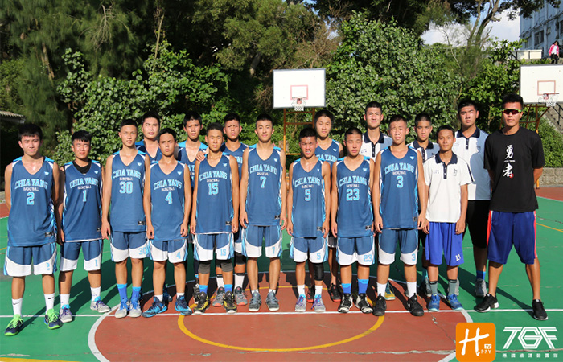

貼文時間：2017/07/11

有別於市區的繁華，嘉陽高中位於台中清水區鰲峰山半山腰，多了些與世獨立的寧靜感。嘉陽高中籃球隊，成立僅邁入第二年，即取得台中第四的成績，從本來的社團型球隊轉變成正式校隊，幕後的推手除了學校家長會的支持、李宗勳教練義務帶隊的熱情更是促成球隊誕生的重要推手。
李宗勳教練把自己所學一點一滴交給球員，慢慢看他們從每場比賽輸很多，輸一點，到贏球的過程，學生能找到自己的重心、方向，對雙方都有正向幫助，教練能得到成就感也是種經驗的磨練，對學生是種成長。希望孩子們照著他的指導去做，不一定要打到什麼層級，而是藉由籃球凝聚團隊意識，培養人品，因為籃球可以改變一個孩子，針對錯的事去罵，不管在球場上或是為人處事上，去教育他們先把人作好才是把球打好。
即將升上高三的隊長余昱錡，儘管還有很多地方要學習，例如：有時候狀況不好或是管不好學弟時都會感到挫折，但昱錡把教練鼓勵他可以打得更好這句話放在心上，以身作則，用切入去擊敗對手，目標希望把學弟再帶去南區。
畢業生前鋒李梓維，國中在籃球擁有良好基礎，原先考去大甲高工，後來轉來嘉陽，他沒想過轉來會有球隊，內心中「我想打籃球」的聲音迴繞，少了籃球生活之的很空虛，直到遇到教練創立了這個球隊生活重心才有了改變。在生日的時候教練跟他說，謝謝你把嘉陽帶起來。這句話也道出他的球隊生活，因為他曾經說要帶著隊友下台南打複賽，從輸很多到能贏球背後有很多挫折，所以能打到中區第四對他來說真的是「不可思議」。
球隊氣氛很快樂，情感很深厚，關於「勇者」的口號是由教練所設計，希望球員不要怕，不論在球場上或是面對任何事都不要畏懼，多方去嘗試，戰勝心魔。
在台中市複賽第一場對上明道中學，學校出動兩台遊覽車的啦啦隊，第四節還落後10幾分，在8分鐘內把他追平又超前，因為一路落後甚至是輸到快30分，但教練叫他們全力拚，因為輸了就沒了，楊祐權投的追平三分，打了一場逆轉對球隊球員來說信心和處理球方面都有很大的進步。
至於球隊能在成軍時間不長的情況下，拿到好成績，教練把功勞歸功於是孩子本身肯拚、肯練，即便過程很辛苦，但怎麼在最短的時間用最適合他們的方式去練球是他們成功的關鍵。
為了克服比賽經驗少的劣勢，把眼淚化作動力並帶著「勇者」精神前進。在新的年度，李教練準備讓球員與其他球隊多加比賽，以磨練增加他們缺少的經驗，教練自己也會持續進修為了帶給球隊更好更棒的東西，大家一起持續成長自我提升。
他們是台中嘉陽高中，一群無所畏懼的勇者。